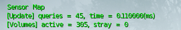
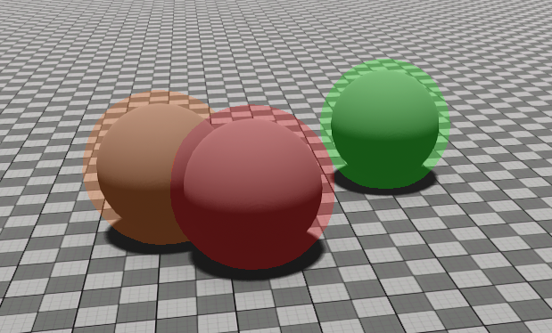
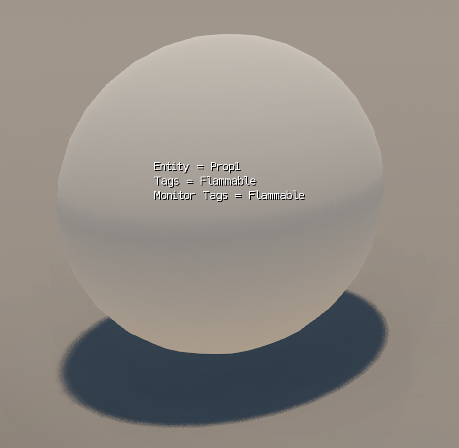
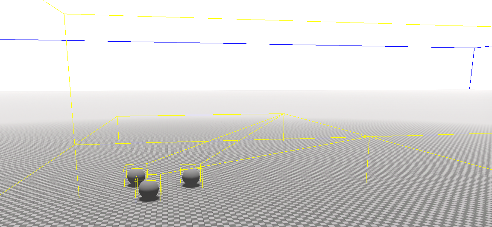
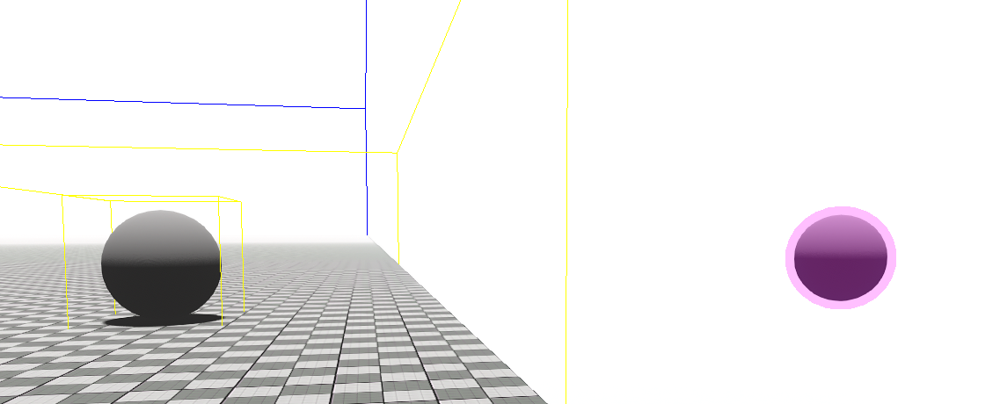
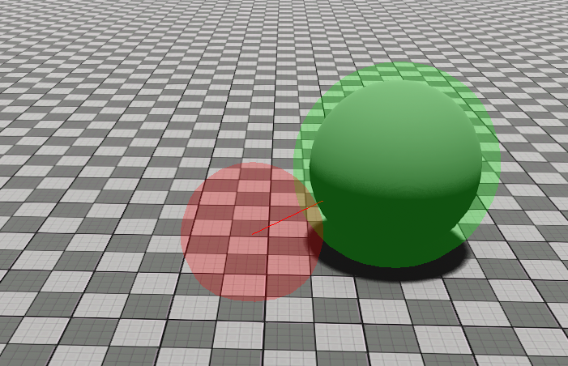

This feature is still in beta and subject to constant change. We encourage you to use it in test projects and provide your feedback to us.
However, DO NOT use it in production where it creates dependencies! Always back up your projects to make sure that you can go back to a previous version.
Overview
The sensor system allows both programmers and designers to place arbitrary volumes in the world and be notified when collisions occur between those volumes using tags as a filtering mechanism. It is also possible to perform ad-hoc spatial queries in order to find all volumes in a given area.
The sensor system plugin also exposes a component to Schematyc.
Background
The Sensor system provides similar functionality to the existing area system. The main motivations for developing a new system were:
- to support multiple volumes per entity
- to use tags to filter objects by type
An additional requirement was that the system be able to support hundreds of dynamic objects with minimal impact on performance.
How Does it Work?
The Sensor system consists of a tag library and a map class. The tag library contains a set of both hard coded and use defined tags which are encoded as bit flags into a single 32 bit integer at run-time. The map manages volumes, performing spatial queries and sending out notifications when one volume enters or leaves another volume.
The volumes are stored in an octree which not only accelerates queries but also allows us to reduce the number of queries performed. When a volume moves we visit the overlapping cells and apply the volume's tags to a set of dirty cells. In the next update we then only check for collisions between volumes in dirty cells with tags matching those that have changed. The octree used by the sensor map differs from the traditional octree implementations in that it doesn't actually allocate any cells. It exists only to perform calculations and determine which cells contain or overlap elements, the idea being that we can avoid cache misses by re-calculating cell bounds on the fly rather than by lookup. It is up to the user of the plotter to allocate their own array of cells and use the indices provided by the plotter to reference them.
CVars
Cvar/Command | Description |
|---|---|
| sensor_Debug | Sensor debug draw configuration:
|
| sensor_DebugRange | Used to specify sensor debug range. Debug element will only be drawn within this range from the camera. |
| sensor_SetOctreeDepth | Used to set depth of sensor map octree. |
| sensor_SetOctreeBounds | Used to set bounds of sensor map octree. |
The sensor_Debug CVar can be used to enable various debug options and with it you can mix and match any number of parameters e.g. vo will draw both volumes and the map octree.
Use m to display information about the number of active queries, time taken to process those queries, the number of active volumes in the worlds and the number of stray (i.e. out of bounds) volumes.

Pic1: Sample output of information displayed
Use v to draw all volumes within range. Volumes that are not monitored will appear orange, volumes that are monitored but not colliding will appear red and volumes that are monitored and colliding will appear green.

Pic2: Sample output of all volumes drawn within range
Use e and t to draw volume entities and tags respectively.

Pic3: Sample output of all volumes entities and tags drawn
Use o to draw links from all volumes within range to their containing octree cells. These links will appear yellow and the world bounds will appear blue.

Pic4: Sample output of links drawn from all volumes within range
Use s to draw all stray volumes i.e. volumes located outside the world bounds and therefore not taken into consideration when performing collisions queries. Stray volumes will appear purple.

Pic5: Sample output of all stray volumes drawn
Use i to test sensor queries using a sphere projected from the camera. If the sphere in front of the camera appears green it means no collisions have been detected. If it appears red then it is colliding with something and you should see links to the volumes it's colliding with.

Pic6: Sample output of sensor queries tested using a sphere